ATRT
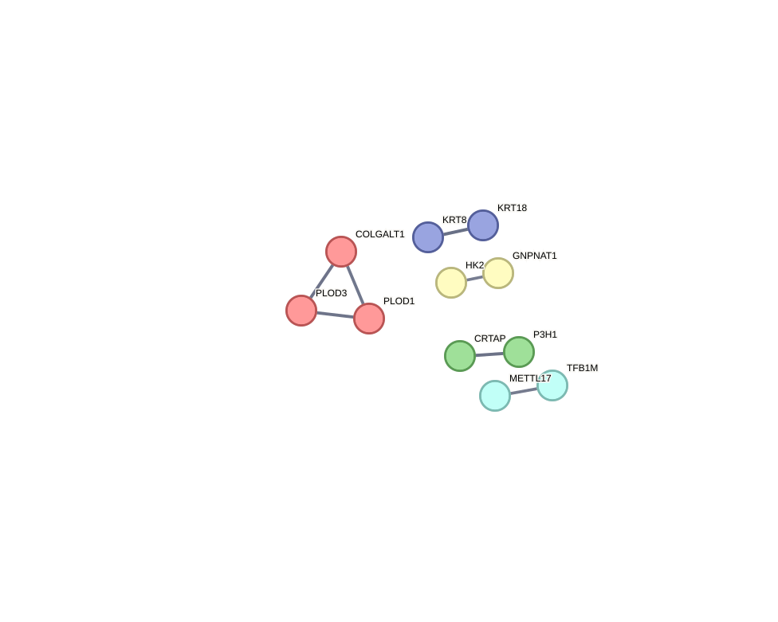
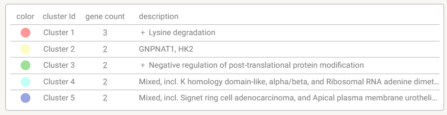
Considerando que os dados já foram normalizados (transformados para log2) através do pacote DIAgui (para dados provenientes do DIA-NN), podemos seguir para a imputação.
Dados de proteômica por DIA geralmente apresentam menor proporção de valores ausentes (missing values, NAs) em comparação com dados obtidos por DDA. Na literatura de proteômica, uma abordagem bastante utilizada para imputação é a gaussiana, baseada na substituição dos valores faltantes por números amostrados de uma distribuição normal deslocada para baixas intensidades. Essa estratégia é particularmente adequada para dados DDA, nos quais o processo de aquisição tende a favorecer a seleção e fragmentação de íons mais abundantes. Como consequência, peptídeos e proteínas de baixa abundância podem deixar de ser detectados, ficando sub-representados no conjunto de dados. Nesses casos, os valores ausentes são frequentemente interpretados como missing not at random (MNAR), isto é, ausências associadas à baixa abundância do analito e a limitações técnicas de detecção.
Por outro lado, na proteômica DIA, a aquisição ocorre por janelas sistemáticas de fragmentação ao longo de faixas pré-definidas de m/z, o que reduz o viés estocástico de seleção característico do DDA e aumenta a reprodutibilidade entre corridas. Por isso, embora ainda possam existir valores ausentes por baixa abundância, interferência de sinal ou limitações analíticas, uma parcela maior dos NAs em dados DIA pode ser interpretada como missing at random (MAR), dependendo da estrutura do conjunto de dados e do padrão de ausência observado. Assim, enquanto a imputação gaussiana deslocada é classicamente associada a cenários predominantemente MNAR, em dados DIA pode ser mais apropriado considerar estratégias que levem em conta a coexistência de mecanismos MAR e MNAR, em vez de assumir automaticamente que todos os valores ausentes resultam apenas de baixa abundância.
Para mais detalhes, ver o artigo Evaluating Proteomics Imputation Methods with Improved Criteria.
As proteínas foram filtradas com 70% at least one group, sendo group o diagnóstico. O artigo do banco de dados faz a imputação de maneira semelhante, mas usa 50% at least one group (e eles posteriormente fazem clustering também).
O pacote msImpute é frequentemente utilizado para imputação de missing values em proteômica. Os autores do pacote (e os autores do primeiro artigo citado anteriormente) o recomendam para realizar o diagnóstico dos missings e posterior imputação.
O diagnóstico do pacote forneceu os números mais prováveis de cada tipo de NAs, demonstrando que eles realmente se comportam como dados DIA.
Para dados MAR, o pacote recomenda utilizar o método v2, que imputa valores baseando-se em low rank approximation.
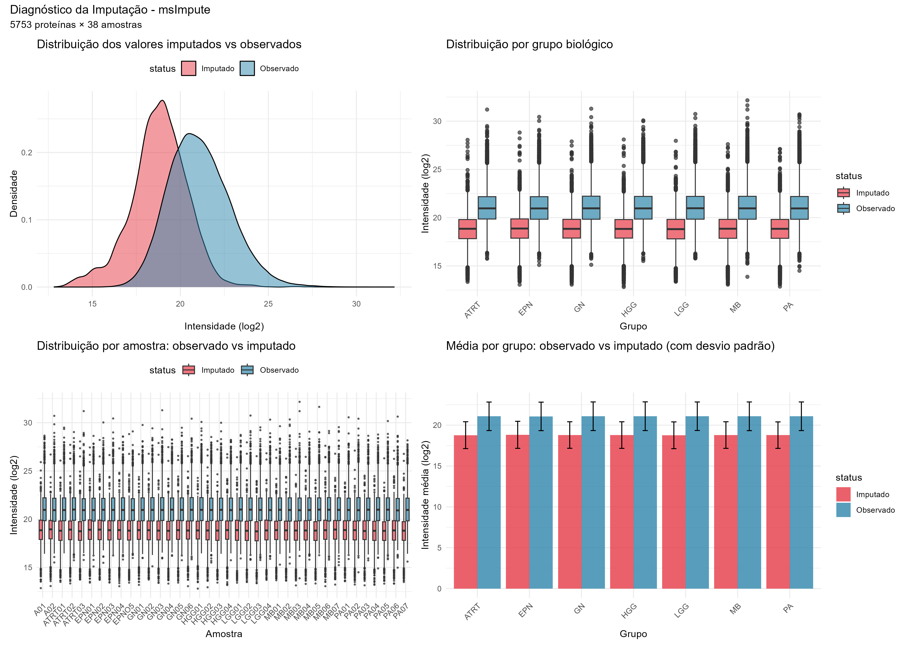
Inspecionando visualmente os dados imputados, é possível notar que os valores estimados pelo msImpute apresentaram distribuição consistentemente deslocada para intensidades menores em relação aos valores observados, tanto globalmente quanto por grupo biológico e por amostra, sem evidência de distorções marcantes entre diagnósticos. Esse padrão sugere que a imputação foi conservadora e biologicamente plausível, preservando a estrutura global dos dados sem inflar artificialmente as intensidades.
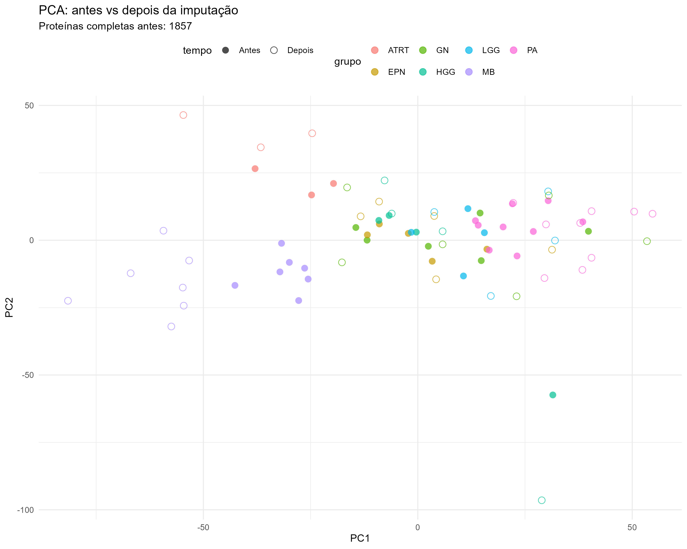
Olhando a PCA antes/depois, é possível observar que a imputação não comprometeu a estrutura global de agrupamento das amostras, uma vez que os principais padrões associados aos grupos biológicos foram em grande parte preservados após o procedimento. No entanto, observou-se deslocamento de algumas amostras no espaço multivariado, sugerindo que a imputação exerceu impacto mensurável sobre a variabilidade dos dados, particularmente em amostras possivelmente mais afetadas por valores ausentes (o que, considerando que apenas ~1800 estavam 100% completas em todos os grupos, é esperado). De modo geral, os resultados indicam que a imputação foi capaz de ampliar a cobertura da matriz sem descaracterizar os principais sinais biológicos.
Para manter o fenótipo dos tumores, considerando o proteoma e não apenas o diagnóstico, as amostras foram agrupadas de acordo com o proteoma total (pós-imputação). Para o agrupamento, foi utilizado o pacote ClusterConsensusPlus, que frequentemente é utilizado para clusterizar dados ômicos (é utilizado, inclusive, no artigo do banco de dados, mas de maneira menos criteriosa que a nossa). O pacote permite encontrar o melhor número de k (melhor número de clusters) e mostra quais amostras caíram naquele cluster.
É importante se atentar ao formato do arquivo de entrada no script no R, porque cada arquivo tem seu próprio separador. Eu recomendo .csv separado por ";".
data <- read.csv(
"matriz_proteomica_imputada.csv",
header = TRUE,
sep = ";",
stringsAsFactors = FALSE,
check.names = FALSE
)O CC funciona de maneira a tirar parte das amostras e parte das variáveis (proteínas) a cada rodada para ver se o cluster (em determinado k - número de clusters) se mantém. Assim, ele consegue ver os clusters que se mantêm mais estáveis mesmo tirando amostras e proteínas. O número de repetições escolhido foi 1000, de acordo com valores observados na literatura.
Para decidir "quais eram" os clusters, foram utilizados os métodos PAM (em que uma amostra mais representativa é o "centro do cluster" em um plano cartesiano, de forma que depois são traçadas linhas para "dividir" os clusters no plano); e Pearson e Spearman (que não apresentaram diferenças nos resultados), que calculavam o quanto cada amostra era parecida com a outra, considerando o proteoma total.
results <- ConsensusClusterPlus(
d = expr,
maxK = 6,
reps = 1000,
pItem = 0.8,
pFeature = 0.8,
clusterAlg = "pam",
distance = "spearman",
seed = 123,
plot = "png",
title = "Consensus2_PAM_spearman_anamallin"
)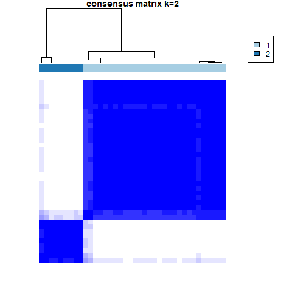
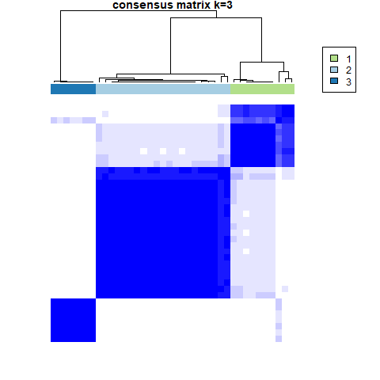
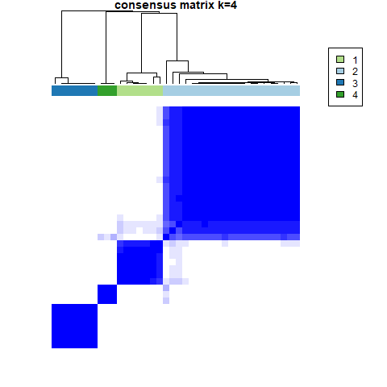
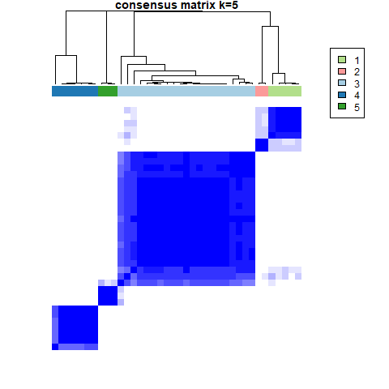
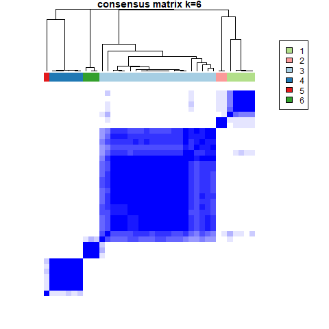
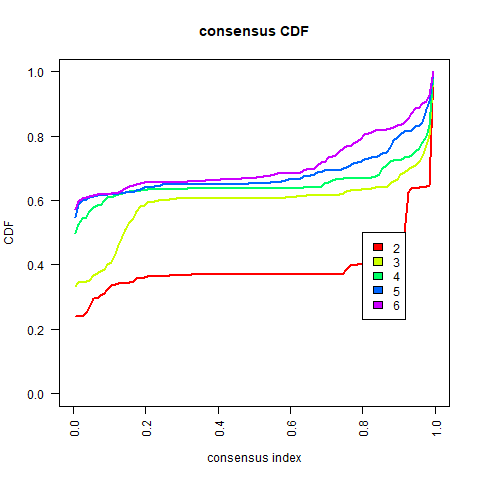
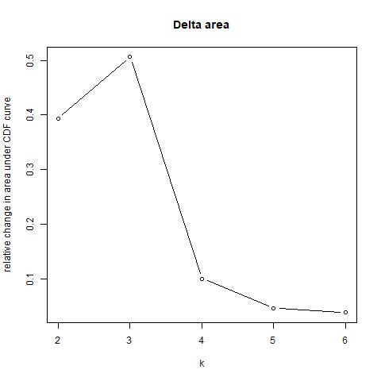
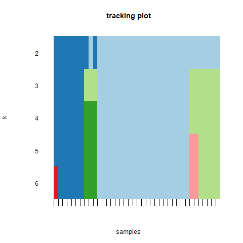

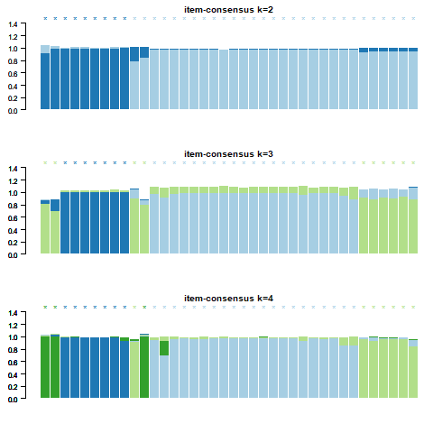
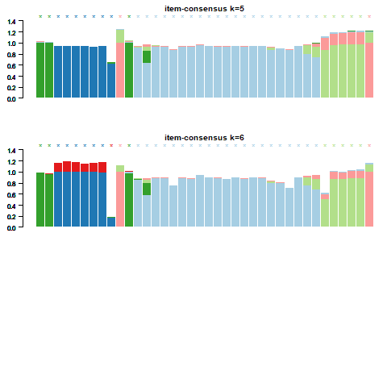
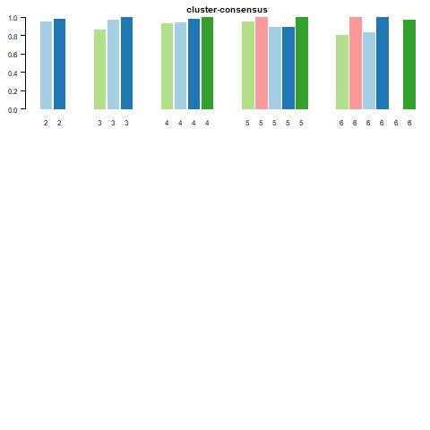
A escolha do k=4 é a mais acertada porque, olhando para a matriz de consenso, conseguimos ver quatro "quadradões" azuis bem nítidos e separados por áreas brancas, o que prova que os grupos são sólidos e não se misturam entre si. O gráfico de Delta Area confirma isso ao mostrar um "ponto de cotovelo" no 4, indicando que a partir dali o ganho de estabilidade cai muito e não vale a pena fragmentar os dados em k=5 ou k=6 apenas para complicar a análise. Somando isso ao Tracking Plot, percebemos que as amostras se mantêm estáveis nessa configuração, evitando divisões forçadas que aconteceriam em níveis mais altos, garantindo o melhor equilíbrio entre clareza e precisão nos seus dados. Os gráficos de ICL contribuem para k=4. Ele é o valor mais alto de k onde a estabilidade dos clusters permanece máxima e a maioria das amostras (Item-Consensus) mantém uma atribuição clara e sem ambiguidades. A amostra EPNO5 apresentou o menor consenso médio intracluster da solução com k=4, indicando menor estabilidade de alocação em relação às demais amostras. Entretanto, sua maior afinidade de consenso permaneceu com o cluster 2, sugerindo que, embora limítrofe, sua classificação nesse grupo foi mantida.
| Cluster | Amostras |
|---|---|
| 1 | EPN03, EPN04, GN01, GN03, EPN02, EPN01, HGG01 |
| 2 | EPNO5, GN02, GN06, HGG04, A01, LGG02, LGG03, LGG04, PA01, PA02, PA03, PA04, PA05, PA06, PA07, GN04, GN05, A02, HGG02, HGG03, LGG01 |
| 3 | MB04, MB06, MB02, MB01, MB03, MB05, MB07 |
| 4 | ATRT02, ATRT01, ATRT03 |
Como dados ômicos não seguem um padrão perfeitamente normal e têm problemas de desigualdade na variância, a ANOVA clássica não é recomendada, de modo que correções como BH e FDR mostram-se necessárias. Nesse contexto, estudei bastante os métodos possíveis para testar quais proteínas estariam diferencialmente expressas, e encontrei a ANOVA do pacote limma no R.
O método foi desenvolvido para contextos de alta dimensionalidade e número relativamente pequeno de amostras, nosso cenário na proteômica, apesar de ele ter surgido para transcriptômica. Diferentemente da ANOVA clássica, o limma ajusta modelos lineares para cada proteína e aplica uma moderação Bayesiana empírica das variâncias: ele olha para todos os dados e vê o comportamento geral deles para ajustar cada proteína de acordo com o comportamento global. Isso torna as estimativas mais estáveis e aumenta o poder estatístico, principalmente quando há heterogeneidade entre amostras e variâncias pouco confiáveis, que é o nosso caso.
Além disso, o método permite testar simultaneamente diferenças globais entre múltiplos grupos e realizar contrastes específicos de forma integrada, com correção para múltiplas comparações. Assim, a escolha da ANOVA do limma para os nossos dados traz robustez pela capacidade de lidar adequadamente com milhares de proteínas avaliadas em paralelo e por fornecer uma abordagem estatisticamente mais apropriada do que métodos clássicos univariados em um contexto de alta complexidade biológica e dimensional.
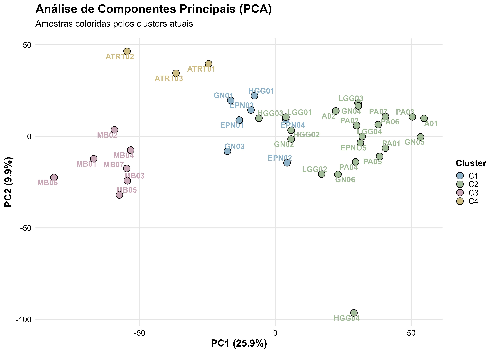
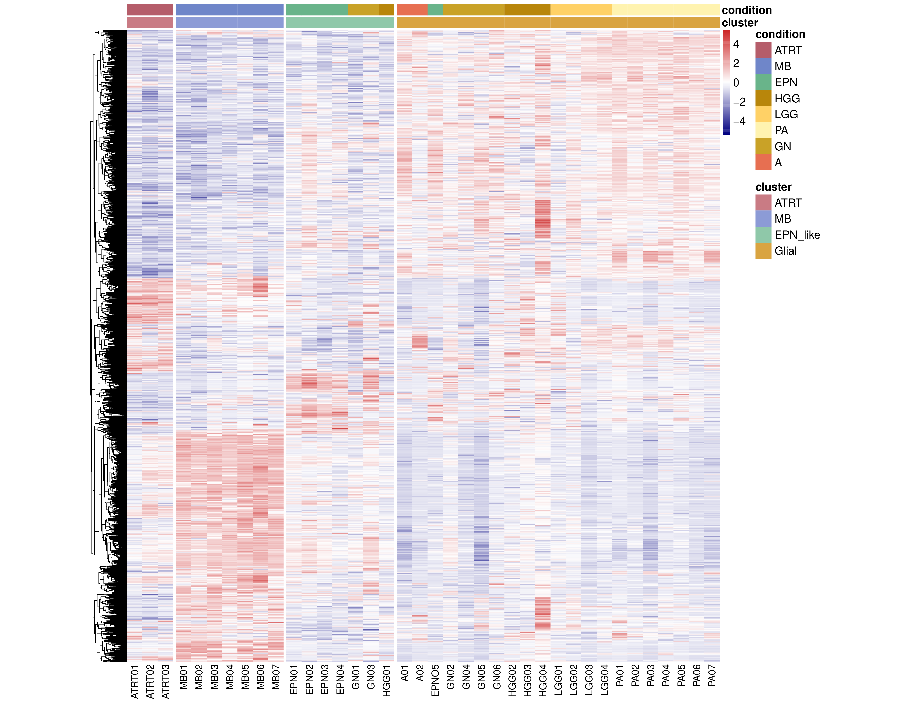
Listas das proteínas diferencialmente expressas/abundantes.
Para cada contraste, você pode abrir a lista completa de DAPs ou aplicar filtros de Fold Change > 0 e Fold Change < 0. Em geral, Fold Change > 0 indica maior abundância no primeiro grupo do contraste.
Painel com os volcano plots de todos os contrastes avaliados na análise diferencial.
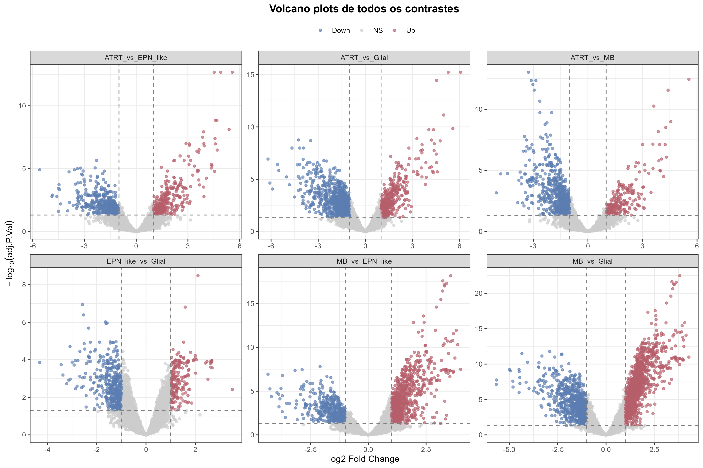
Enriquecimento para cada contraste (inclusive UP/DOWN) via ORA através do pacote clusterProfiler no R.
A tabela ORA completa fica disponível em uma página dedicada, com filtros por contraste, banco, via, gene e direção.


As interpretações abaixo sintetizam os padrões de enriquecimento por contraste. As cores seguem os clusters usados na PCA: EPN-like Glial MB ATRT.
Os resultados de enriquecimento para o contraste EPN-like vs Glial sugerem um perfil biológico predominantemente reduzido em EPN-like, uma vez que a grande maioria das assinaturas apareceu com escore negativo e direção Down. Entre os conjuntos mais significativos, destacam-se processos relacionados à matriz extracelular, espaço extracelular, organização de estrutura extracelular e adesão biológica, além do hallmark epithelial mesenchymal transition (EMT), indicando uma menor representação de vias associadas à interação célula-microambiente, remodelamento tecidual e plasticidade celular nesse grupo em comparação ao grupo glial. Também foram observadas reduções em assinaturas inflamatórias e de resposta ao estresse, como TNFα signaling via NF-κB, inflammatory response, IL6/JAK/STAT3 signaling, hypoxia, complement e coagulation, o que pode apontar para um fenótipo menos associado a inflamação, resposta imune e comunicação com o estroma. Em contraste, a via spliceosome apareceu como Up, sugerindo que mecanismos ligados ao processamento de RNA e splicing podem estar relativamente mais ativos em EPN-like. Em conjunto, esses achados indicam que o grupo EPN-like apresenta uma assinatura molecular marcada pela diminuição de processos extracelulares, mesenquimais e inflamatórios, com possível destaque para alterações em regulação pós-transcricional.
Os resultados de enriquecimento para o contraste EPN-like vs MB indicam que o grupo EPN-like apresenta, em relação ao meduloblastoma, uma redução marcada de programas biológicos ligados à proliferação celular, controle do ciclo celular, replicação e reparo de DNA, organização da cromatina e processamento de RNA/splicing, como evidenciado pelo enriquecimento negativo de assinaturas como E2F targets, G2M checkpoint, MYC targets, DNA repair, além de termos de chromosome organization, chromatin modification, DNA replication, mRNA processing e RNA splicing. Em conjunto, esse padrão sugere que o grupo MB mantém um perfil mais fortemente associado a atividade proliferativa e regulação nuclear/transcricional, enquanto o grupo EPN-like exibe menor predominância desses processos. Por outro lado, o grupo EPN-like mostrou enriquecimento positivo em vias relacionadas a fosforilação oxidativa, metabolismo de ácidos graxos, adipogenesis, cholesterol homeostasis, hipóxia, coagulação, IL2/STAT5 signaling e extracellular space, apontando para um perfil comparativamente mais associado a metabolismo energético oxidativo, adaptação metabólica e componentes do microambiente extracelular. Assim, os achados sugerem que, em contraste com o fenótipo mais proliferativo e centrado em ciclo celular observado em MB, o grupo EPN-like apresenta uma assinatura molecular relativamente mais metabólica e microambiental.
Os resultados de enriquecimento para o contraste EPN-like vs ATRT mostram que o grupo EPN-like apresenta uma forte redução de assinaturas relacionadas à matriz extracelular, espaço extracelular, migração celular, angiogênese, hipóxia, glicólise, EMT e outros programas associados a maior remodelamento tecidual, plasticidade e agressividade tumoral, além de diminuição de processos ligados à biogênese ribossomal e, em menor grau, à proliferação. Esse padrão sugere que, em comparação ao ATRT, o grupo EPN-like exibe um fenótipo menos mesenquimal, menos invasivo e menos orientado a adaptação metabólica e ao microambiente tumoral. Em contrapartida, o enriquecimento positivo em termos associados a morfogênese, adesão biológica, cílio primário, projeções celulares, além de hallmarks como Hedgehog signaling, apical junction, myogenesis, apoptosis e p53 pathway, indica que o grupo EPN-like preserva relativamente mais características ligadas à organização estrutural celular, diferenciação e vias de desenvolvimento. Em conjunto, os achados sugerem que o ATRT mantém uma assinatura molecular mais agressiva e fortemente associada a remodelamento extracelular, hipóxia e programas mesenquimais, enquanto o grupo EPN-like apresenta um perfil comparativamente mais estruturado, morfogenético e menos dominado por processos invasivos.
Os resultados de enriquecimento para o contraste Glial vs MB indicam que o grupo Glial apresenta, em relação ao meduloblastoma, uma redução acentuada de processos ligados à proliferação celular, controle do ciclo celular, replicação e reparo de DNA, organização da cromatina e processamento de RNA/splicing, conforme evidenciado pelo enriquecimento negativo de assinaturas como E2F targets, G2M checkpoint, MYC targets, DNA repair, spliceosome, além de diversos termos de chromatin organization, DNA replication e RNA splicing. Esse padrão sugere que o grupo MB mantém um perfil mais fortemente associado à atividade proliferativa e a programas nucleares/transcricionais. Em contrapartida, o grupo Glial mostrou enriquecimento positivo em vias relacionadas a EMT, myogenesis, angiogenesis, TNFα signaling via NF-κB, inflammatory response, IL6/JAK/STAT3 signaling, IL2/STAT5 signaling, complement, coagulation, além de processos metabólicos como cholesterol homeostasis, fatty acid metabolism e adipogenesis. Em conjunto, esses achados indicam que, em comparação ao MB, o grupo Glial apresenta uma assinatura molecular relativamente mais associada a interação com o microambiente tumoral, inflamação, plasticidade celular e adaptação metabólica, enquanto o meduloblastoma se destaca por um fenótipo mais centrado em proliferação e regulação do ciclo celular.
Os resultados de enriquecimento para o contraste Glial vs ATRT indicam que o grupo Glial apresenta, em relação ao ATRT, enriquecimento positivo muito marcado em processos relacionados ao microambiente extracelular, adesão biológica, organização da matriz extracelular, projeções neuronais, diferenciação neuronal, sinapse, superfície celular e processos do sistema nervoso, sugerindo um perfil mais associado à organização estrutural tecidual e a características de diferenciação neural. Além disso, o grupo Glial também mostrou enriquecimento em hallmarks como myogenesis, estrogen response, IL2/STAT5 signaling, coagulation, complement, apical junction, angiogenesis, TNFα signaling via NF-κB, inflammatory response, p53 pathway, apoptosis e Hedgehog signaling, reforçando a presença de programas ligados à interação com o microambiente, resposta inflamatória e regulação de vias de desenvolvimento. Em contraste, o enriquecimento negativo observado para NABA matrisome, EMT, hypoxia, glycolysis, E2F targets e MYC targets indica que esses processos estão relativamente mais representados no ATRT, apontando para um fenótipo mais agressivo, mesenquimal, proliferativo e metabolicamente adaptado. Em conjunto, os achados sugerem que o grupo Glial possui uma assinatura molecular comparativamente mais diferenciada e relacionada à arquitetura celular e neural, enquanto o ATRT se destaca por programas associados à plasticidade tumoral, hipóxia, remodelamento extracelular e agressividade biológica.
Os resultados de enriquecimento para o contraste MB vs ATRT indicam que o grupo MB apresenta, em relação ao ATRT, enriquecimento positivo em processos ligados à organização da cromatina, regulação transcricional, ligação ao DNA, ciclo celular, checkpoint G2/M, alvos de E2F, reparo de DNA e splicing, sugerindo um perfil mais fortemente associado à proliferação celular e à regulação nuclear/transcricional. Além disso, o enriquecimento de assinaturas como Hedgehog signaling e Verhaak glioblastoma proneural reforça um fenótipo mais relacionado a programas neurais e de crescimento celular. Em contraste, o enriquecimento negativo observado para matrisome, matriz extracelular, EMT, migração celular, hipóxia, angiogênese, glicólise, fosforilação oxidativa, metabolismo lipídico, resposta inflamatória e IL2/STAT5 signaling indica que esses processos estão relativamente mais representados no ATRT, apontando para um perfil mais associado ao remodelamento do microambiente tumoral, plasticidade celular, adaptação metabólica e maior agressividade biológica. Em conjunto, os achados sugerem que o MB possui uma assinatura molecular mais centrada em proliferação e regulação da cromatina, enquanto o ATRT se destaca por vias relacionadas ao microambiente extracelular, metabolismo e fenótipo mesenquimal/invasivo.
| Grupo | Principais características biológicas | Comparativamente mais associado a | Comparativamente menos associado a |
|---|---|---|---|
| EPN-like | Perfil mais estrutural e morfogenético, com destaque para adesão biológica, morfogênese, cílio primário, projeções celulares, além de enriquecimento em splicing em comparação ao grupo glial. Em relação ao MB, mostra perfil mais metabólico/microambiental, com fosforilação oxidativa, metabolismo de ácidos graxos, cholesterol homeostasis, hipóxia e coagulação. Em relação ao ATRT, preserva mais vias de desenvolvimento/diferenciação, como Hedgehog, apical junction, apoptose e p53. | Regulação pós-transcricional; metabolismo oxidativo; organização estrutural celular; diferenciação/desenvolvimento. | Proliferação intensa, ciclo celular, reparo/replicação de DNA, EMT, angiogênese, glicólise, matriz extracelular e programas inflamatórios, dependendo do contraste. |
| Glial | Perfil fortemente ligado ao microambiente tumoral, com enriquecimento em EMT, angiogênese, TNFα/NF-κB, inflammatory response, IL6/JAK/STAT3, IL2/STAT5, complement, coagulation, além de metabolismo lipídico. Em relação ao ATRT, também mostra características de diferenciação neural, incluindo projeções neuronais, sinapse, superfície celular e processos do sistema nervoso. | Inflamação; interação célula-microambiente; diferenciação neural; matriz extracelular/adesão; plasticidade celular. | Ciclo celular, E2F, G2M, MYC, DNA repair, splicing e outros programas nucleares/proliferativos, sobretudo em comparação ao MB. |
| MB | Perfil mais proliferativo e nuclear, com forte associação a E2F targets, G2M checkpoint, MYC targets, DNA repair, DNA replication, chromatin organization/modification, mRNA processing e RNA splicing. Em relação ao ATRT, mantém assinatura de regulação transcricional/cromatínica e também Hedgehog signaling e traços de perfil proneural. | Proliferação celular; controle do ciclo celular; replicação/reparo de DNA; organização da cromatina; processamento de RNA/splicing. | Processos de microambiente extracelular, EMT, hipóxia, angiogênese, inflamação, metabolismo lipídico e parte da adaptação metabólica, mais marcantes em glial ou ATRT. |
| ATRT | Perfil mais agressivo, mesenquimal e adaptado ao microambiente, com enriquecimento em matrisome, matriz extracelular, EMT, migração celular, angiogênese, hipóxia, glicólise, fosforilação oxidativa, metabolismo lipídico, resposta inflamatória e IL2/STAT5 signaling. Também aparece associado a E2F e MYC em comparação ao glial, reforçando agressividade biológica. | Remodelamento extracelular; plasticidade tumoral; hipóxia; metabolismo; fenótipo mesenquimal/invasivo; agressividade. | Características de diferenciação neural/estrutural, adesão organizada, morfogênese e, frente ao MB, menor predominância de programas de regulação cromatínica e splicing. |
| Grupo | Resumo interpretativo |
|---|---|
| EPN-like | Parece ocupar uma posição intermediária, menos agressiva que o ATRT, menos proliferativa que o MB e menos inflamatória/mesenquimal que o grupo glial, com maior peso de estrutura celular, diferenciação e metabolismo oxidativo. |
| Glial | Destaca-se como um grupo mais voltado ao microambiente, inflamação e plasticidade, mas também com traços de diferenciação neural, especialmente quando comparado ao ATRT. |
| MB | É o grupo com assinatura mais claramente centrada em proliferação, ciclo celular e regulação nuclear/transcricional. |
| ATRT | Apresenta o perfil mais associado a agressividade biológica, EMT, hipóxia, metabolismo tumoral e remodelamento do microambiente extracelular. |
O WGCNA (Weighted Gene Co-expression Network Analysis) é uma abordagem de biologia de sistemas que identifica módulos de genes ou proteínas com padrões de expressão semelhantes entre as amostras, permitindo detectar grupos molecularmente coordenados e, dentro deles, elementos centrais chamados hubs. No presente trabalho, seu uso se justifica porque, além de identificar proteínas diferencialmente abundantes entre os grupos tumorais, foi importante investigar como essas proteínas se organizam em redes de coexpressão, revelando programas biológicos compartilhados associados aos clusters e aos diagnósticos. Assim, o WGCNA acrescenta uma camada integrativa à análise proteômica, favorecendo a priorização de proteínas com maior relevância biológica e funcional para a caracterização dos subtipos tumorais.
O WGCNA encontra módulos, agrupamentos de genes que apresentam perfis de expressão altamente correlacionados entre si através das amostras analisadas, normalmente representados por cores.
O Module Membership, também conhecido como kME (conectividade baseada no eigengene), quantifica quão próximo um gene individual está de um determinado módulo.
Como é calculado: é a correlação de Pearson entre o perfil de expressão de um gene específico e o Eigengene (ME) do módulo.
Interpretação: os valores variam de -1 a 1. Se um gene tem um MM próximo de 1 ou -1, ele é considerado um componente central e altamente representativo desse módulo. Se o MM é próximo de 0, o gene não pertence verdadeiramente àquele módulo.
Utilidade: permite identificar quais genes são os mais fiéis à assinatura biológica do módulo.
Hub Gene (Gene Hub) é um gene que possui uma conectividade extremamente alta dentro de um módulo. Numa rede, ele é como uma estação central de metrô por onde passam muitas ligações.
Critérios: geralmente, define-se um gene como hub se ele possuir alta conectividade intramodular, muitas ligações com outros genes do mesmo módulo, elevado MM, geralmente > 0.8, e, muitas vezes, uma correlação significativa com a característica clínica ou biológica de interesse, chamada GS (Gene Significance).
Importância: do ponto de vista biológico, os genes hub são frequentemente reguladores mestres ou componentes críticos de uma via. Se um gene hub for desligado, a estrutura funcional de todo o módulo pode colapsar.
Module Eigengene (ME) é o gene representante de um módulo, calculado como o primeiro componente principal (PC1) que resume o perfil de expressão de todos os genes daquele grupo em um único valor.
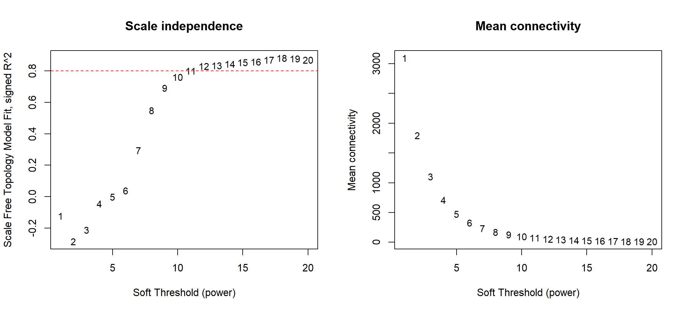
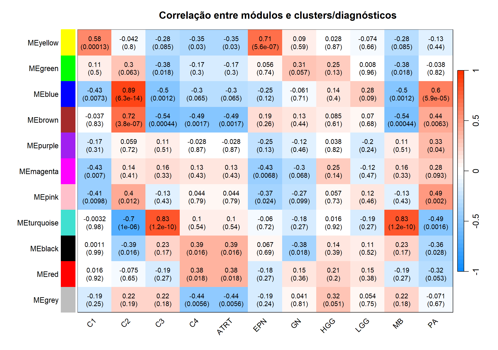
Tabela interativa reunindo os arquivos CSV de enrichment. As linhas são separadas e coloridas pela cor do módulo indicada no nome do arquivo de origem.
| Módulo | Base | Termo enriquecido | GeneRatio | Fold enrichment | zScore | p ajustado | Count | Arquivo | Genes |
|---|
Carregando arquivos de enrichment...
Para encontrar as proteínas que melhor servem como biomarcadores para cada diagnóstico, foram calculadas as HUB proteins de cada módulo e foi feita uma interseção para cada lista de DEPs do diagnóstico referido. Essa lista aponta as proteínas que mais são significativas para caracterizar determinado diagnóstico e será utilizada no STRING.
PPI realizada no site do STRING com apenas as proteínas UP comuns de cada diagnóstico, 0.9 de confiança, Experiments, Databases e Co-expression
Nas aulas de Biologia de Sistemas vi bastante sobre análise de redes, pensei em juntar todas as "comuns" de um diagnóstico (UP e DOWN) e anotar no cytoscape se é UP ou se é DOWN, tem como fazer uma correlação com drogas também, acho que ficaria legal. Essas imagens são apenas UP dos diagnósticos.


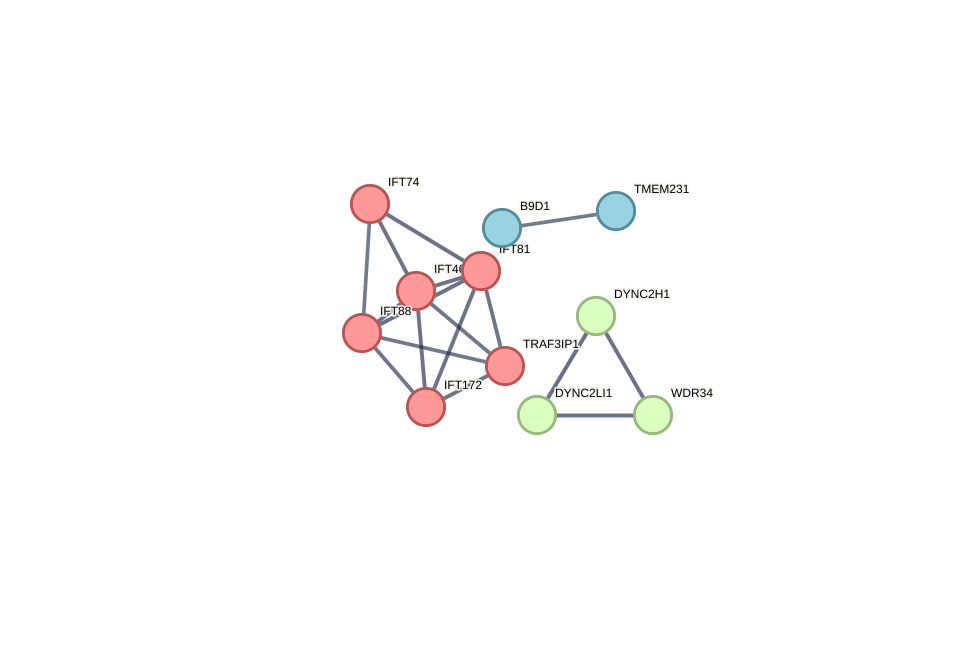
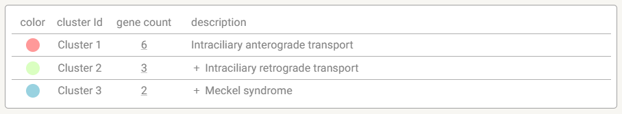

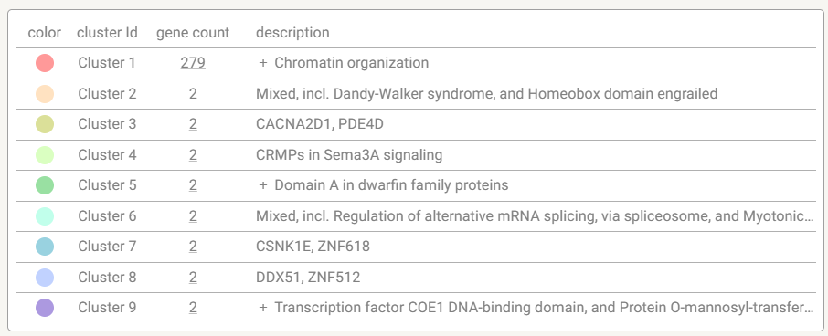
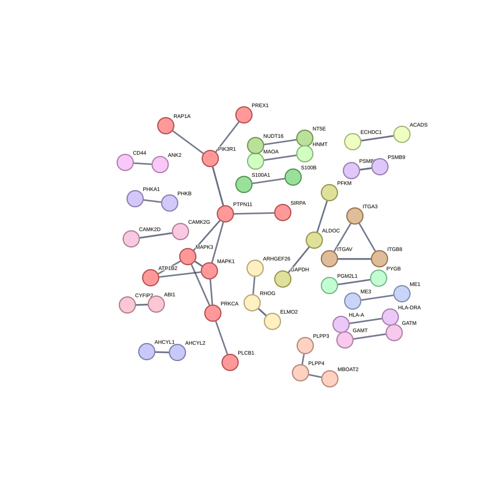
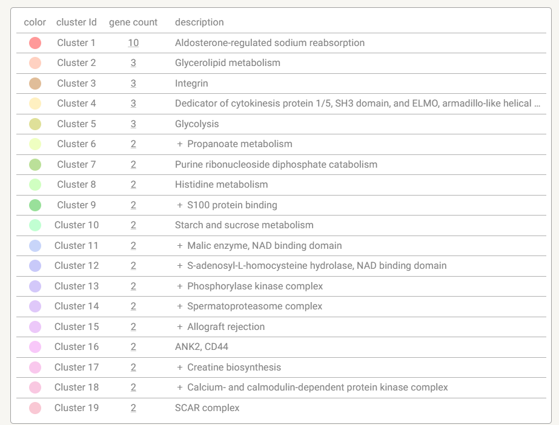
Os conteúdos abaixo foram montados a partir dos arquivos proteinas_comuns_UP_DOWN_por_diagnostico.csv, Cruzamento_plasma_brain_CSF_genes_comuns_UP_DOWN.xlsx e barplot_overlap_UP_DOWN_por_diagnostico.png.
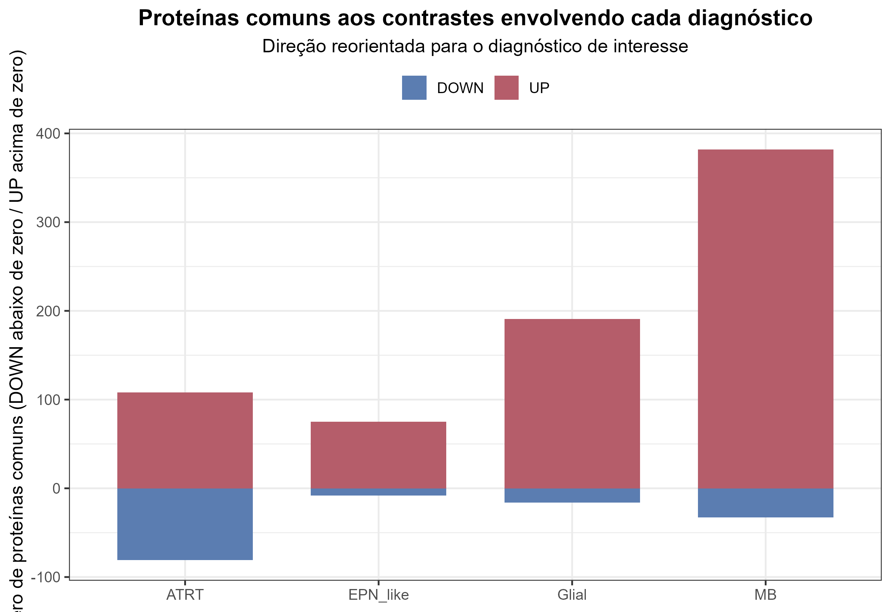
| Diagnóstico | Contrastes | N contrastes | UP comuns | DOWN comuns | Total | Genes na lista | Plasma | Brain | CSF | Em >=1 base | Em >=2 bases | Em 3 bases |
|---|
Carregando resumo de biomarcadores...
| Diagnóstico | Direção | Gene | Lista | Contrastes | Plasma | Brain | CSF | N bases | Categoria |
|---|
Carregando genes comuns...